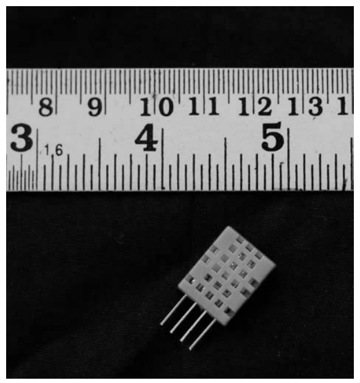
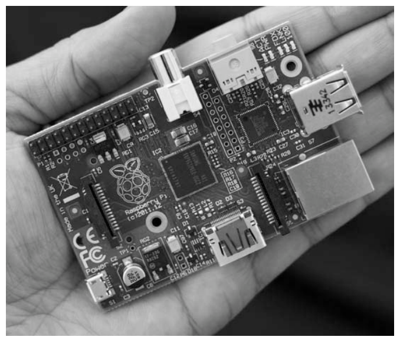
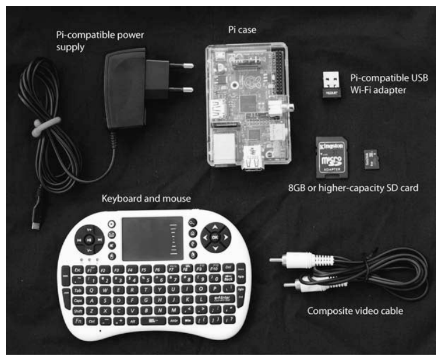
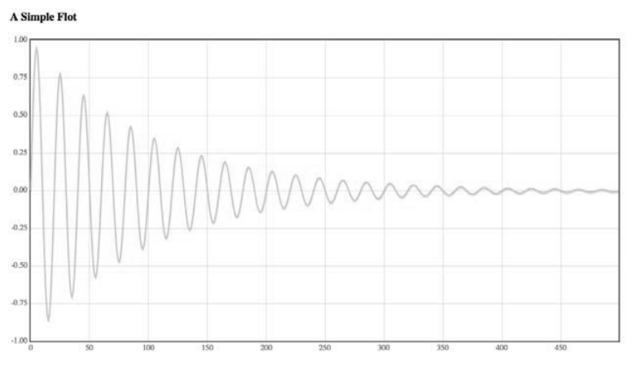
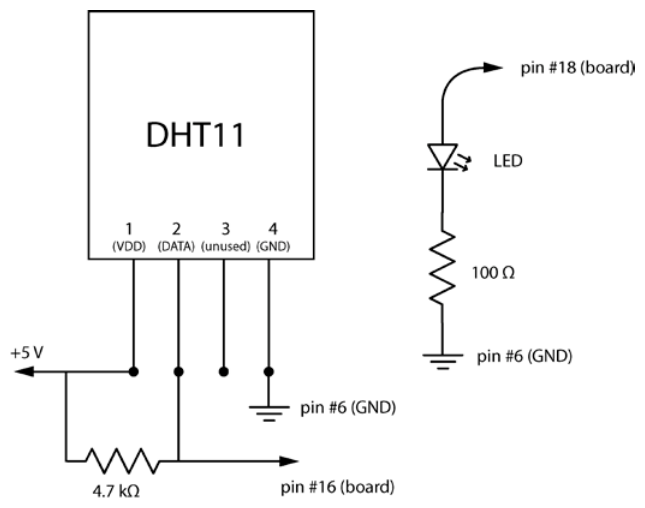
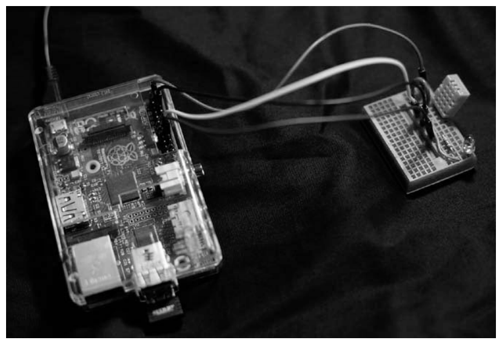
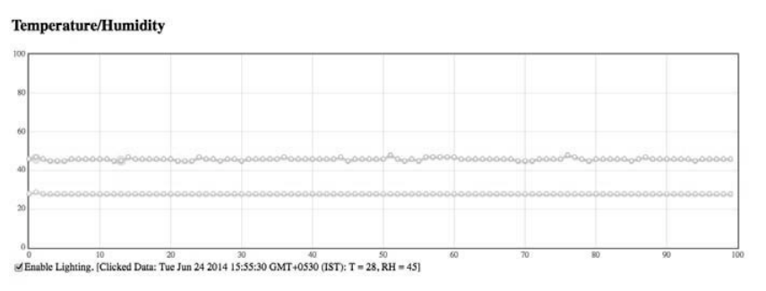

第 14 章 基于树莓派的天气监控器#
本章解决：如何把一块 35 美元的完整计算机变成局域网上的气象站——树莓派上跑 Bottle Web 服务器，DHT11 传感器采集温湿度；浏览器访问树莓派的 IP 地址，网页用 flot 每秒刷新滚动图表，还能用网页复选框远程开关 LED。本章是客户端—服务器架构的活教材：传感器数据经 HTTP + JSON 从树莓派流向浏览器。 承上启下：硬件篇的收官之作。第 12 章的 Arduino 靠串口线点对点直连，本章把数据通路升级为网络——任何连入局域网的设备都能访问同一个服务。微控制器（无操作系统、只管实时读引脚）与完整计算机（能跑操作系统和 Web 服务）的分工，到此凑齐了嵌入式世界的两条路线；这也是全书的最后一章。
📓 章代码：nb/ch14.ipynb（分节代码；ch01–08 含固定种子实跑输出，ch09–14 为完整实现待硬件环境）
当项目需要更多计算能力或外设支持——比如 USB、高清晰度多媒体接口（HDMI）视频——你已经离开了像 Arduino 这样的微控制器领域，进入计算机领域。**树莓派（Raspberry Pi）**是小型计算机，能很好地执行这类高级任务，尤其与 Arduino 相比。
像 Arduino 一样，树莓派被大量有趣项目采用。它可以放在手掌中，却是一台完整的计算机（可以连接显示器和键盘）——这让它在教师和创造者中广受欢迎。
本章的项目：用树莓派和温湿度传感器 DHT11，构建基于 Web 的温湿度监控系统。树莓派上运行的代码启动 Bottle Web 服务器，监听传入的连接；当你访问本地网络上树莓派的 IP 地址时，Bottle 提供包含天气数据图表的网页；树莓派上的处理程序与 DHT11 通信取得数据，返回给客户程序；客户程序用 flot 库在浏览器中绘制传感器数据。还会为连接到树莓派的发光二极管（LED）提供基于 Web 的控制——演示如何通过 Web 控制外部设备。
Python 3 适配：本章原书代码是 Python 2.7 的
原书章首注明："这个项目使用 Python 2.7……编写的代码与两者（Python 2.7 和 Python 3）兼容。"后半句对原书代码并不成立：14.4 节的 print 'starting piweather...' 在 Python 3 下是语法错误。本笔记统一按 Python 3 呈现代码，差异逐处标注。
14.0 本章导图#
14.1 硬件#
像现在销售的所有笔记本电脑或台式机一样，树莓派具有中央处理单元（CPU）、随机存取存储器（RAM）、USB 端口、视频输出、音频输出和网络连接。但与大多数计算机不同，树莓派很便宜：约 35 美元。此外，由于板载的通用输入/输出（GPIO）引脚，树莓派可以轻松与外部硬件接口，让它成为各种嵌入式硬件项目的理想选择——本章用 DHT11 温度和湿度传感器连接它，监控环境。
14.1.1 DHT11 温湿度传感器#
DHT11 是测量温度和湿度的常用传感器。它有 4 个引脚：VDD（+）、GND（−）、DATA，还有一个引脚不使用。DATA 引脚连接到微控制器（本例中为树莓派），输入和输出都通过这一个引脚。我们用 Adafruit 的 Python 库 Adafruit_Python_DHT 与 DHT11 通信，取得温度和湿度数据。
原书笔误：到底是哪个引脚空着
正文说"第 4 个引脚不使用"，但图 14-5 的标注很清楚：引脚 1 是 VDD、引脚 2 是 DATA、引脚 3 未使用、引脚 4 是 GND。实物 DHT11 的四引脚顺序正是 1 VDD、2 DATA、3 空（NC）、4 GND。接线时以图 14-5 为准。

拓展：DHT11 的脾气
DHT11 湿度量程 20–90%RH（精度 ±5%RH）、温度量程 0–50°C（精度 ±2°C），采样周期不快于 1 秒——这正是本章客户端把轮询周期定为 1000ms 的原因。它走单线协议：DATA 线既要接收树莓派的启动信号，也要回传 40 位数据（湿度 16 位、温度 16 位、校验和 8 位），全靠微秒级时序配合，所以这些比特级握手都交给库处理。嫌精度不够时可以换 DHT22（量程 −40~80°C、精度 ±0.5°C），调用方式一致，把参数 DHT11 换成 DHT22 即可。
拓展：Adafruit_Python_DHT 已经退休（2026 年现状）
原书使用的 Adafruit_Python_DHT 库已在 GitHub 归档，官方停止维护（新版系统、新树莓派上问题尤多）。官方替代方案是 CircuitPython 版 DHT 库：
调用改为：
import board
import adafruit_dht
dht = adafruit_dht.DHT11(board.D23) # board.D23 即 BCM 编号 23（物理引脚 #16）
t = dht.temperature # 读数变成属性；失败抛 RuntimeError 而非返回 None
h = dht.humidity
新库需要用 try/except 重试坏读数。本笔记按原书库呈现代码，迁移时只改这一处。
14.1.2 树莓派#
写作本书时，树莓派有 3 种型号：Raspberry Pi 1 Model A+、Raspberry Pi 1 Model B+ 和 Raspberry Pi 2 Model B。这个项目使用较老的 Raspberry Pi Model B Rev 2，但项目中使用的引脚号码在所有型号中都兼容，代码能在所有型号上工作，无需更改。
图 14-2 展示了树莓派 B 型计算机，它有：两个 USB 端口、一个 HDMI 连接器、一个复合视频输出插孔、一个音频输出插孔、一个用于供电的微型 USB 端口、一个以太网端口，以及 26 个 GPIO 引脚（排成两列，每列 13 针）。板的底侧还有 SD 卡插槽。树莓派使用 Broadcom BCM2835 芯片：内置 ARM CPU，运行频率 700 MHz，功耗非常低——这就是树莓派不像台式计算机那样需要巨大散热片来冷却的原因。B 型还有 512MB 的 SDRAM。这些细节大多对本项目不重要，但想用袖珍计算机的全套规格给人留下深刻印象时，它们会很方便。

14.1.3 设置树莓派#
与 Arduino 不同，不能把树莓派插进计算机就开始编码。作为一个完备的计算机，树莓派需要操作系统和外设。至少建议准备如图 14-3 所示的外设：
| 外设 | 要求 |
|---|---|
| SD 卡 | 8GB 或更高容量，装有合适的操作系统 |
| USB Wi-Fi 适配器 | 与树莓派兼容 |
| 电源 | 官方建议 5V 1200 mA；需要使用所有 USB 端口时用 5V 2500 mA |
| 盒子 | 保护宝贵的树莓派 |
| 键盘和鼠标 | 方便起见考虑只占一个 USB 端口的无线组合 |
| 显示线 | 复合视频电缆或 HDMI 电缆（HDMI 的详细用法见原书附录 C） |

注意：先查兼容列表再掏钱
购买前务必检查已知与 Pi 兼容的外围设备列表：http://elinux.org/RPI_VerifiedPeripherals 。Wi-Fi 适配器尤其要认准型号——并不是所有 dongle 都被 Raspbian 支持。
14.2 安装和配置软件#
现在可以设置树莓派、准备写 Python 了。安装前建议先看 Raspberry Pi Foundation 的"Getting Started with NOOBS"设置视频（http://www.raspberrypi.org/help/noobs-setup/ ）。
14.2.1 操作系统#
树莓派的操作系统和文件驻留在外部 SD 卡上。有几个操作系统可选，作者推荐 Raspbian。操作系统需要以特定方式安装，这里不介绍细节（细节会变），请参考 Linux wiki 的"RPi Easy SD Card Setup"（http://elinux.org/RPi_Easy_SD_Card_Setup ），或同一链接里的"Using NOOBS"——后者更适合初学者。
14.2.2 初始配置#
安装操作系统后首次启动：插入格式化的 SD 卡，把复合视频电缆连接到电视或显示器，连接键盘和鼠标，然后接通电源。树莓派启动时，一个叫 raspi-config 的程序应该启动（文档见 https://www.raspberrypi.org/documentation/configuration/raspi-config.md ）。修改配置如下：
- 选择 Expand Filesystem，使用完整的 SD 卡；
- 选择 Enable Boot to Desktop/Scratch，然后选择 Desktop；
- 选择 Change Time Zone，在 Internationalization Options 下设置时区；
- 转到 Advanced Options，启用 Overscan；
- 转到 SSH，通过 Enable or Disable SSH Server 选项启用远程命令行访问。
选择 Finish 后，树莓派重启并显示桌面。
14.2.3 Wi-Fi 设置#
本项目用无线网络连接树莓派。假设安装了兼容的 Wi-Fi 适配器（先查 elinux.org），Raspbian 应该在插入时自动识别。接下来设置静态 IP 地址（Static IP）——服务器需要一个固定不变的"门牌号"，浏览器才知道去哪找它。
用内置的 Nano 编辑器编辑网络配置文件。Nano 的 UI 极简，熟悉它需要一点时间；最重要的一件事是记住：按 Ctrl-X 并输入 Yes，保存文件并退出。打开 LXTerminal（随 Raspbian 安装），输入：
interfaces 文件用于配置网络设置，相关部分如下：
# /etc/network/interfaces（书 14.2.3 节）
auto lo
iface lo inet loopback # 本地回环
iface eth0 inet dhcp # 有线网口：动态获取 IP
allow-hotplug wlan0 # 插入无线网卡时自动启用
iface wlan0 inet manual
wpa-roam /etc/wpa_supplicant/wpa_supplicant.conf # Wi-Fi 密码在 wpa_supplicant 里
iface default inet static # 以下三行：静态 IP 配置
address 192.x.x.x # 树莓派的固定 IP（不得与网内其他设备冲突）
netmask 255.255.255.0 # 网络掩码
gateway 192.x.x.x # 网关（通常是路由器的地址）
添加或修改文件末尾的 address、netmask、gateway 三行，以适合本地网络：
- 网络掩码一般填
255.255.255.0； - 网关这样查：Linux 在终端运行
ifconfig；Windows 按 Win+R 后运行ipconfig /all；OS X 在 System Preferences ▸ Network 里看； - 给树莓派的静态 IP 必须不同于网络上任何其他设备的 IP。
然后用桌面的 WiFi Config 实用程序让树莓派连上 Wi-Fi 网络（遇到困难可参考 https://learn.adafruit.com/ 上的 Adafruit 教程）。一切顺利的话，树莓派应该能用内置浏览器 Midori 连上因特网。
14.2.4 设置编程环境#
接下来安装开发环境：与外部硬件通信所需的 RPi.GPIO 包、Bottle Web 框架，以及在树莓派上安装其他 Python 包所需的工具。确保已连接因特网，在终端逐条运行：
$ sudo apt-get update
$ sudo apt-get install python-setuptools
$ sudo apt-get install python-dev
$ sudo apt-get install python-rpi.gpio
$ sudo easy_install bottle
Python 3 适配：上面这组命令装的是 Python 2 的包
原书命令面向 Python 2 时代：python-setuptools / python-dev / python-rpi.gpio 装的都是 Python 2 版本，easy_install 也早已被 pip 取代。当前 Raspberry Pi OS 上对应改用：
从 http://www.flotcharts.org/ 下载最新版本的 flot JavaScript 绘图库，展开为 flot 目录，复制到程序所在的文件夹：
接着安装 Adafruit_Python_DHT 库（https://github.com/adafruit/Adafruit_Python_DHT/ ），用它从连接到树莓派的 DHT11 取数据：
$ git clone https://github.com/adafruit/Adafruit_Python_DHT.git
$ cd Adafruit_Python_DHT
$ sudo python setup.py install # Python 3 适配：sudo python3 setup.py install
树莓派现在应该已经设置完毕，构建天气监视程序所需的软件全部就位。
拓展：RPi.GPIO 与新树莓派的兼容性
RPi.GPIO 通过 /dev/gpiomem 直接操作寄存器，在 Model B 到 Pi 4 上都是标配。树莓派 5（2023 年发布）换了 RP1 南桥芯片，RPi.GPIO 不再适用——新生态已转向基于内核字符设备（/dev/gpiochipN）的 libgpiod / lgpio 与 gpiozero 库。另外一条安全提醒：PyPI 上曾出现冒充 rpi-gpio 的投毒假包，树莓派上装 RPi.GPIO 请用 apt 的 python3-rpi.gpio，不要 pip 裸装。
14.2.5 通过 SSH 连接#
与连接显示器、用鼠标键盘控制相比，从桌面或笔记本电脑登录树莓派更容易。Linux 和 OS X 内置了这种支持——Secure Shell（SSH）；Windows 用户请安装 PuTTY。一次典型的 SSH 会话如下：
$ ssh pi@192.168.4.32 # 输入 ssh 用户名@IP 地址，登录树莓派
pi@192.168.4.32's password: # 默认密码：raspberry
pi@raspberrypi ~ $ whoami # 验证登录身份
pi
pi@raspberrypi ~ $
输入 ssh pi@IP 地址 后会提示输入密码，默认密码为 raspberry。登录成功后输入 whoami，如果响应是 pi，就说明已经正确登录。
注意：改掉默认密码
更改树莓派的用户名和密码，让它更安全，这是一个好主意。pi/raspberry 这对默认凭据人尽皆知——本章的服务又没有任何登录验证，改密码是部署前第一件事。更多远程操作提示见原书附录 C。
14.2.6 Web 框架 Bottle#
要通过 Web 界面监视和控制树莓派，需要让它运行一个 Web 服务器。我们使用 Bottle——一个具有简单界面的 Python Web 框架，实际上整个库由名为 bottle.py 的单个源文件组成。以下是用 Bottle 提供一个简单网页所需的全部代码：
# ===== 书 14.2.6 节：Hello Bottle World =====
from bottle import route, run
@route('/hello') # ① 装饰器：把 hello() 注册为 URL /hello 的处理函数
def hello():
return "Hello Bottle World!" # ② 客户端访问该路由时返回的字符串
run(host='192.168.x.x', port=8080, debug=True) # ③ 启动服务器（换成自己的 IP 和端口）
这段代码用 Python 装饰器 @route 定义了一条路由（route）——代表一个 URL 或路径，客户端用它来发送数据请求。定义的路由调用路由函数，返回一个字符串。run() 方法启动 Bottle 服务器，之后就可以接受来自客户端的连接（务必提供自己的 IP 地址和端口号）。debug 标记设为 True，诊断问题时更容易。
在连接到本地网络的任何计算机上打开浏览器，输入 http://192.168.4.4:8080/hello，Bottle 就会提供一个包含 "Hello Bottle World!" 的网页。只需几行代码，就拥有了一个 Web 服务器。
客户端将利用**异步 JavaScript 和 XML（AJAX）**框架，向服务器（运行在树莓派上的 Bottle）发出请求。为了让 AJAX 调用易于编写，我们将使用流行的 jQuery 库。
注意：Python 装饰器（原书注意框，完整保留）
Python 中的装饰器采用 @ 语法，它将一个函数作为参数，并返回另一个函数。装饰器提供了一种方便的方式，用另一个函数来"包装"一个函数。例如，这段代码：
@wrapper
def myFunc():
return 'hi'
相当于执行以下操作：
myFunc = wrapper(myFunc)
函数是 Python 中的一等对象（first-class object），可以像变量一样传递。
拓展：@route 到底做了什么
@route('/hello') 的本质是 hello = route('/hello')(hello)：route('/hello') 先返回一个"注册器"函数，它把 hello 塞进 Bottle 内部的路由表（URL → 处理函数的映射），再原样返回 hello。装饰器语法糖 + 函数是一等对象，两行 Python 特性就撑起了 Web 框架的"路由"抽象。本章后面还会看到同一件事的 JavaScript 版：onDataReceived 作为回调变量传给 $.ajax——两种语言都在用"函数即值"。
拓展：字典直接返回就是 JSON
本章服务器端函数最后都 return {"RH": RH, "T": T} 这样返回字典——Bottle 会自动把字典序列化为 JSON 文本发给浏览器（函数名—值对原样保留）。14.4.1 节的 /getdata 路由就靠这个特性，一行代码完成"Python 字典 → JSON 响应"。
14.2.7 用 flot 绘制#
flot 库有一个易于使用的强大 API，用最少的代码创建漂亮的图形。基本思路：设置一些 HTML 保存一个图表位置（占位元素），再提供一个值的数组，flot 处理其余工作。示例如下（原书代码库的 simple-flot.html 文件）：
<!-- ===== 书 14.2.7 节：simple-flot.html（完整） ===== -->
<html>
<head>
<meta http-equiv="Content-Type" content="text/html; charset=utf-8">
<title>SimpleFlot</title>
<style>
.demo-placeholder { /* ① CSS 类：占位元素的宽高，保存绘图 */
width: 80%;
height: 80%;
}
</style>
<script language="javascript" type="text/javascript" src="flot/jquery.js"></script> <!-- ② -->
<script language="javascript" type="text/javascript" src="flot/jquery.flot.js"></script> <!-- ② jQuery 与 flot 捆绑，无须单独下载 -->
<script language="javascript" type="text/javascript">
$(document).ready(function() { // ③ HTML 加载完毕后浏览器立即执行这个函数
// create plot
var data = []; // ④ 声明空的 JavaScript 数组
for(var i = 0; i < 500; i ++) {
data.push([i, Math.exp(-i/100)*Math.sin(Math.PI*i/10)]); // ⑤ 依次放入 [i, y] 坐标对
}
var plot = $.plot("#placeholder", [data]); // ⑥ 调 flot 出图
});
</script>
</head>
<body>
<h3>A Simple Flot Plot</h3>
<div class="demo-container">
<div id="placeholder" class="demo-placeholder"></div> <!-- ⑦ 绘图将填充这个元素 -->
</div>
</body>
</html>
逐行拆解：①行定义 CSS 类 demo-placeholder，设置占位符元素的宽度和高度（它在文档主体中定义）；②行声明本页使用的 JavaScript 文件 jquery.js 和 jquery.flot.js——jQuery 与 flot 捆绑在一起，不需要单独下载，且请确保顶层 flot 目录放在与源代码相同的目录中；③行用 jQuery 方法 $(document).ready() 定义一个函数，HTML 文件一加载浏览器就执行它；④行声明空数组后循环 500 次，⑤行把形如 [i, y] 的值添加进去——每个值对应下面这个函数的 x、y 坐标（函数的选择有点随意）：
⑥行从 flot 库调用 plot() 绘图：第一个参数是包含绘图的 HTML 元素（placeholder）的 id。在浏览器中加载这个 HTML 文件，就能看到图 14-4 的图形。

这里用的是 flot 默认设置，但 flot 可以定制：调整颜色、用数据点代替线条、添加图例和标题、采用交互式绘图等等——14.4.2 节设计天气数据图表时会用到。
14.2.8 关闭树莓派#
不要突然断开运行中的树莓派的电源，否则可能损坏文件系统，让树莓派无法启动。要关闭树莓派的用户界面（直接或从计算机连接时），通过 SSH 输入：
注意：确认你登录的是树莓派
输入 shutdown 命令前，需要确保已登录到树莓派——否则你可能会关闭主计算机（如果你正在运行 Linux）。SSH 会话里敲关机命令前先看一眼提示符。
输入 shutdown 命令几秒钟后，树莓派的黄色指示灯应该会闪烁 10 次。现在可以安全地拔掉插头。
14.3 搭建硬件#
除了树莓派和外设，还需要以下器材与连接线：DHT11 传感器、4.7kΩ 电阻、100Ω 电阻、红色 LED、面包板。
图 14-5 展示了如何连接所有器件：
- DHT11 的 VDD 引脚 → +5V（树莓派上的引脚 #2）；
- DHT11 的 DATA 引脚 → 引脚 #16；
- DHT11 的 GND 引脚 → GND（引脚 #6）；
- DATA 和 VDD 之间连接一个 4.7kΩ 电阻（上拉）；
- LED 的阴极（负极）通过 100Ω 电阻连接到 GND，阳极（正极）连接到引脚 #18。

可以用无焊接的面包板连接 DHT11 和 LED 电路并测试该装置（图 14-6），工作令人满意后，再把装置移到定制的外壳中。

原书笔误：LCD 应为 LED
原书图 14-6 的图注写"DHT11 和 LCD 与面包板连接"，14.6 节正文也写了"连接到 DHT11 和 LCD 电路"——本项目的电路里只有一颗 LED，没有 LCD。两处都是笔误。
拓展：4.7 kΩ 上拉电阻在拉什么
DHT11 的 DATA 线默认悬空（高阻态），电平不确定。上拉电阻把 DATA 平时拉到 VDD（高电平），通信时传感器再主动把线拉低——一拉一放就是单总线协议表达"0/1"的方式。没有上拉，线上的电平漂移，读数全是垃圾。树莓派 GPIO 内部虽有可编程上拉（约 50–65 kΩ），但对这种时序敏感的传感器，外接 4.7 kΩ 更可靠，也是 DHT 数据手册的推荐值。
拓展：BOARD 与 BCM 两套引脚编号
树莓派引脚有两套叫法：BOARD 按板上物理位置编号（本章代码的 GPIO.BOARD 模式）；BCM 按 Broadcom 芯片的 GPIO 通道号命名（Adafruit_DHT 库只认 BCM）。本章四个连接点对照如下：
| 连接 | 物理引脚（BOARD） | BCM 编号 |
|---|---|---|
| DHT11 VDD → +5V | #2 | ——（电源脚） |
| DHT11 GND → GND | #6 | ——（地线） |
| DHT11 DATA | #16 | GPIO23 |
| LED 阳极 | #18 | GPIO24 |
两套混用是树莓派编程最经典的混乱源——14.4 节的代码将同时用到两套惯例，接线前先照上表对齐。
14.4 代码#
现在开发树莓派上运行的代码（想直接看完整项目代码，跳到 14.5 节）。首先是 main() 函数：
# ===== 书 14.4 节：main()（Python 3 版）=====
def main():
print('starting piweather...') # Python 3 适配：原书是 print 语句（Python 2 语法）
# create parser
parser = argparse.ArgumentParser(description="PiWeather...") # 命令行解析器
# add expected arguments
parser.add_argument('--ip', dest='ipAddr', required=True) # ① 服务器 IP，必填
parser.add_argument('--port', dest='portNum', required=True) # ② 端口号，必填
# parse args
args = parser.parse_args()
# GPIO setup
GPIO.setmode(GPIO.BOARD) # ③ BOARD 模式：按板上物理位置编号
GPIO.setup(18, GPIO.OUT) # ④ 物理引脚 #18 设为输出（控制 LED）
GPIO.output(18, False) # ⑤ 初始电平 False：启动时 LED 关闭
# start server
run(host=args.ipAddr, port=args.portNum, debug=True) # ⑥ 启动 Bottle，监视所有警告
①②行设置命令行参数解析器，两个必需参数：--ip 是服务器启动的 IP 地址，--port 是服务器端口号。③行启动 GPIO 引脚设置：使用 BOARD 模式，按板的物理布局编号。④行把引脚 #18 设置为输出（要向它写数据来控制 LED）；⑤行设置引脚值为 False，LED 在启动时关闭。⑥行提供 IP 地址和端口号启动 Bottle，debug=True 监视所有警告消息。
拓展：argparse 的套路没变
这套 argparse 写法从第 2 章用到第 12 章：add_argument('--ip', dest='ipAddr', required=True) 声明选项、目标变量名与必填属性，parse_args() 拿到结果。本章没有默认值兜底——IP 和端口都必须显式给，毕竟服务器连哪个门牌号不是小事。
14.4.1 处理传感器数据请求#
处理传感器数据请求的函数：
# ===== 书 14.4.1 节：getdata 路由 =====
@route('/getdata', method='GET') # ① 定义路由 /getdata，响应 HTTP GET 请求
def getdata():
RH, T = Adafruit_DHT.read_retry(Adafruit_DHT.DHT11, 23) # ② 读 DHT11：23 是 BCM 编号（物理 #16）
# return dictionary
return {"RH": RH, "T": T} # ③ 字典由 Bottle 自动转成 JSON 返回
①行用装饰器定义了名为 /getdata 的路由；客户端访问这个 URL 时，getdata() 方法被调用，它利用 Adafruit_DHT 模块取得湿度和温度数据（②行）；③行把取得的数据作为字典返回，Bottle 将它作为"JavaScript 对象表示法（JSON）"对象提供给客户端。JSON 对象由名—值对组成的列表构成，可以作为对象读入：这里的名—值对有两个——湿度读数（RH）和温度（T）。
read_retry(传感器类型, 引脚) 表示"重试直到读到"：DHT11 的单线协议时序敏感，偶尔一次读取会失败，库函数默认最多重试 15 次、每次间隔 2 秒，返回值是 (湿度, 温度) 元组。
别被 23 绕晕：一个程序两套编号
read_retry(Adafruit_DHT.DHT11, 23) 中的 23 是 BCM 编号（对应物理引脚 #16），而 main() 里的 setup(18, ...) 是 BOARD 编号（物理 #18 = BCM 24）。这不是笔误：Adafruit_DHT 库固定用 BCM，RPi.GPIO 由你的 setmode() 决定。接错编号系统，轻则 LED 不亮、传感器读不到，重则把电平写进错误的引脚。对照表见 14.3 节拓展。
书上没说的：read_retry 可能返回 (None, None)
两个隐患书里都没有处理。其一，默认参数下最坏要重试 15 次 × 2 秒 ≈ 30 秒才返回，而浏览器端每秒都在发起新请求——一旦传感器接触不良，请求会排队堆积。其二，重试用尽后返回 (None, None)，书代码照样塞进 JSON，客户端图表里就出现 null（flot 画不出来）。稳妥做法是显式限制重试并过滤坏值：
14.4.2 绘制数据#
plot() 函数处理客户端的绘图请求。整个网页（HTML + CSS + JavaScript）作为一个字符串由这个函数返回。下面分块拆解——这些块拼起来就是 14.5 节完整清单里 return '''...''' 的内容。
第一块：HTML 的 head 部分——设置 CSS 样式并加载 JavaScript 文件：
<!-- ===== 书 14.4.2 节：plot 路由返回的 HTML —— <head> 部分 ===== -->
<html>
<head>
<meta http-equiv="Content-Type" content="text/html; charset=utf-8">
<title>PiWeather</title>
<style>
.demo-placeholder { width: 90%; height: 50%; } /* CSS 注释：绘图占位元素宽 90%、高 50% */
</style>
<script language="javascript" type="text/javascript" src="jquery.js"></script>
<script language="javascript" type="text/javascript" src="jquery.flot.js"></script>
<script language="javascript" type="text/javascript" src="jquery.flot.time.js"></script>
plot() 是 /plot URL 的 Bottle 路由：连接到该 URL 时 plot() 被调用，把整个 HTML 数据作为单个字符串返回，交客户端的 Web 浏览器显示。初始几行是 HTML 标题、绘图的 CSS 尺寸声明和 flot 库的引入——与生成图 14-4 的 simple-flot.html 设置同构，只是多了 jquery.flot.time.js（时间轴插件，注意：本页加载了它，但 options 里并没有启用时间轴，见"坑与陷阱"第 5 条）。
第二块：body 部分——页面的整体骨架：
<!-- ===== 书 14.4.2 节：body 部分 ===== -->
<body>
<div id="header">
<h2>Temperature/Humidity</h2>
</div>
<div id="content">
<div class="demo-container">
<div id="placeholder" class="demo-placeholder"></div> <!-- 绘图占位元素 -->
</div>
<div id="ajax-panel"> </div> <!-- AJAX 错误信息显示区 -->
</div>
<div>
<input type="checkbox" id="ckLED" value="on">Enable Lighting.
<span id="data-values"> </span> <!-- 点击数据点的显示区 -->
</div>
</body>
</html>
header 里的 <h2> 只是给绘图加标题；<placeholder> 元素稍后由 flot 的 JavaScript 填充；ID 为 ajax-panel 的元素显示所有 AJAX 错误；ID 为 ckLED 的 checkbox 控制连接到树莓派的 LED；ID 为 data-values 的 span 在用户单击绘图中的数据点时显示传感器数据。JavaScript 代码将利用这些 ID 访问和修改相应元素——ID 就是网页里 DOM 元素的"门牌号"。
第三块：JavaScript——绘图选项与创建空图（这段脚本位于 head 内的 <script> 标签中）：
// ===== 书 14.4.2 节：绘图选项 =====
$(document).ready(function() {
// plot options
var options = { // ① 定制绘图的 options 对象
series: {
lines: {show: true}, // 显示折线
points: {show: true} // 同时显示数据点
},
grid: {clickable: true}, // ② 允许单击绘图网格（用于查询数值）
yaxes: [{min: 0, max: 100}], // ③ y 轴 0–100：RH(%) 和 T(°C) 都装得下
xaxes: [{min: 0, max: 100}] // x 轴 0–100：最近 100 个样本的序号
};
// create empty plot
var plot = $.plot("#placeholder", [[]], options); // ④ 三参数：占位元素 id、空数据数组、options
HTML 完全加载后，浏览器调用 ready() 里的函数。①行声明 options 对象定制绘图：让绘图同时显示线和点；②行允许单击绘图网格；③行设置坐标轴限制。④行用三个参数调用 $.plot() 创建实际绘图：要在其中显示绘图的元素 id、值的数组（开始为空），以及刚刚设置的 options 对象。注意这里建的是空图——数据马上要靠 AJAX 异步灌进来。
第四块：JavaScript——获取传感器数据（本章的心脏）：
// ===== 书 14.4.2 节：getData 与 AJAX 回调 =====
// initialize data arrays
var RH = []; // ① 三个空数组：湿度、温度、时间戳
var T = [];
var timeStamp = [];
// get data from server
function getData() { // ② 由 update() 定期调用
// AJAX callback
function onDataReceived(jsonData) { // ③ 嵌套定义的 AJAX 回调函数
timeStamp.push(Date()); // ④ 记录取数时刻
// add RH data
RH.push(jsonData.RH); // ⑤ 服务器发来的湿度入队
// removed oldest
if (RH.length > 100) { // ⑥ 超过 100 个就删最老的 → 滚动图
RH.splice(0, 1);
}
// add T data
T.push(jsonData.T);
// removed oldest
if (T.length > 100) {
T.splice(0, 1);
}
s1 = []; // ⑦ 组装 flot 需要的 [x, y] 序列
s2 = [];
for (var i = 0; i < RH.length; i++) {
s1.push([i, RH[i]]);
s2.push([i, T[i]]);
}
// set to plot
plot.setData([s1, s2]); // ⑧ 两条序列喂给绘图对象并重画
plot.draw();
}
// AJAX error handler
function onError(){ // ⑨ 错误回调：写进 ajax-panel 元素
$('#ajax-panel').html('<p><strong>Ajax error!</strong> </p>');
}
// make the AJAX call
$.ajax({ // ⑩ 发起异步请求
url: "getdata", // 目标：Bottle 的 /getdata 路由
type: "GET", // HTTP GET 方法
dataType: "json", // 期望 JSON 格式
success: onDataReceived, // 成功 → 数据回调
error: onError // 失败 → 错误回调
});
}
①行初始化温度和湿度的空数组，以及保存每个数据点收集时间的 timeStamp 数组。②行定义 getData()，由定时器定期调用。③行定义 onDataReceived()——它被设置为 AJAX 调用的回调方法。JavaScript 中可以在函数内定义函数，这些函数可以像常规变量一样使用，所以在 getData() 里定义 onDataReceived()，再把它作为回调传给 AJAX 调用，是完全合法的操作（与 14.2.6 节"函数是一等对象"如出一辙——Python 与 JavaScript 都把函数当值用）。
onDataReceived() 收到服务器传来的 jsonData 对象：④行用 JavaScript 的 Date 对象存时间戳；⑤行把湿度数据记入数组（RH 即相对湿度——原书正文这句写成"温度"，照代码湿度在先、温度在后）；⑥行在元素数量超过 100 时用 splice(0, 1) 删除数组中最早的元素——这产生滚动图，效果与第 12 章为 Arduino 光传感器项目用 deque 做的滚动窗口相同（deque 的 pop()+appendleft() 与这里的 push()+splice(0,1) 是同一件事的两种语言写法）。温度数据同样处理。
⑦行把收集的数据格式化成适合传给 plot() 的形状。因为要同时绘制两个变量，需要一个包含两个图层的数组：
外层数组的每个成员是一个序列：第一条线是全部 [i, RH[i]] 对，第二条线是全部 [i, T[i]]。⑧行 setData() 换数据、draw() 重画。⑨行定义错误回调——AJAX 用之前设置的 ajax-panel 元素显示错误。⑩行进行实际的 AJAX 调用：URL 为 getdata（即 Bottle 路由），HTTP 的 GET 方法，以 json 格式请求数据；onDataReceived 设为成功回调、onError 设为错误回调。这个 AJAX 调用会立即返回；数据可用时，回调方法被异步激活——浏览器不阻塞、不刷新页面，这就是 AJAX 名字里"异步"的含义。
原书笔误：三层组数组少了一个右括号
原书的数据结构示例印作 [[[i0, RH0], [i1, RH1], ...], [[i0, T0], [i1, T1]]——结尾少了闭合外层列表的 ]，正确形状是上面正文给出的三重闭合版本。
第五块：JavaScript——update() 定时器：
// ===== 书 14.4.3 节：update() =====
// define an update function
function update() { // ① 每秒调用一次 getData 的"发动机"
// get data
getData();
// set timeout
setTimeout(update, 1000); // ② 1000 毫秒后调用自己 → 永不停歇
}
// call update
update(); // ③ 立即启动第一轮
update() 先调用 getData()，然后利用 JavaScript 的 setTimeout() 方法在 1000 毫秒后调用它自己——因此 getData() 每秒被调用一次，从服务器请求传感器数据。
拓展：setTimeout 自递归 vs setInterval
setTimeout(update, 1000) 写在 update() 内部形成"自递归定时"：上一轮getData（连同网络请求）完成之后才开始计时 1 秒，两次请求不会重叠堆积。若改用 setInterval(update, 1000)，则严格按周期触发——一旦某次请求慢于 1 秒（还记得 read_retry 最坏 30 秒吗），回调就会排队叠罗汉。轮询场景选自递归是稳妥写法。1 秒周期也与 DHT11"采样周期不快于 1 秒"的硬件特性正好匹配。
第六块：LED 复选框的 JavaScript 处理程序 + 服务器端路由：
// ===== 书 14.4.4 节：LED 复选框处理程序 =====
// define the click handler for the LED control button
$('#ckLED').click(function() { // ① 每次单击复选框就调用
var isChecked = $("#ckLED").is(":checked") ? 1:0; // ② 三元表达式：选中 1，未选 0
$.ajax({ // ③ 向 /ledctrl 发 AJAX 请求
url: '/ledctrl',
type: 'POST', // HTTP POST（要写状态到服务器）
data: { strID:'ckLED', strState:isChecked } // 选中的状态作为数据发送
});
});
①行给 HTML 中创建的 ckLED 复选框定义点击处理程序：每次用户单击复选框就调用该函数。②行保存复选框的当前状态（is(":checked") 查询 DOM，三元运算符转成 1 或 0）；③行用 URL /ledctrl 和 HTTP 请求类型 POST 调用 AJAX，把选中状态作为数据发送。与 getdata 的 GET 相比，这里是改变服务器状态（开关灯），所以用 POST。
服务器端处理程序根据请求把树莓派的 GPIO 引脚打开或关闭：
# ===== 书 14.4.4 节：ledctrl 路由 =====
@route('/ledctrl', method='POST') # ① 处理 POST /ledctrl 的路由
def ledctrl():
val = request.forms.get('strState') # ② 从表单数据中取 strState（字符串 '0' 或 '1'）
on = bool(int(val)) # ③ 转成布尔值：True / False
GPIO.output(18, on) # ④ 写引脚 #18：开灯或关灯
①行用装饰器定义 /ledctrl 的 POST 路由。②行利用 Bottle 的 request 对象访问客户端发来的 strState 参数的字符串值；③行 bool(int(val)) 两步转换——先 int() 把 '1'/'0' 变成 1/0，再 bool() 变成 True/False；④行对引脚 #18 调用 GPIO.output()，打开或关闭连接到此引脚的 LED。
第七块：单击数据点查询数值——flot 的交互功能：
// ===== 书 14.4.5 节：plotclick 交互 =====
$("#placeholder").bind("plotclick", function (event, pos, item) {
if (item) { // ① 只在真的点到数据点上时处理
plot.highlight(item.series, item.datapoint); // ② 在被点击的点周围画一个圆环
var strData = ' [Clicked Data: ' +
timeStamp[item.dataIndex] + ': T = ' + // ③ 用 dataIndex 反查数值
T[item.dataIndex] + ', RH = ' + RH[item.dataIndex]
+ ']';
$('#data-values').html(strData); // ④ 写入 data-values 元素
}
});
});
flot 通过在调用 plot() 时向 options 传入 clickable: true 启用"点击数据点获取值"。这里用 bind("plotclick", ...) 注册处理函数：点击数据点时，flot 向函数传入一个 item 对象，它有一个 dataIndex 成员——数据点在序列中的索引。①行判空（点到空白处 item 为空）；②行调用 flot 的 highlight() 在单击点周围画圆环；③行用这个索引从 timeStamp、T、RH 三个数组中反查相关数据（时间戳的作用就在这里兑现——x 轴是序号，具体时刻全靠 timeStamp）；④行把拼好的字符串写进 ID 为 data-values 的 HTML 元素。
最后一块：让 Bottle 找到 .js 文件：
# ===== 书 14.4.5 节末：静态 JS 文件路由 =====
@route('/<filename:re:.*\.js>') # 正则路由：匹配一切以 .js 结尾的请求
def javascripts(filename):
return static_file(filename, root='flot') # 在程序同级的 flot/ 子目录下查找并返回
HTML 页面要加载 jquery.js、jquery.flot.js，还需要一个 Bottle 路由来交付这些文件。路由模式里的 :re: 表示用正则表达式匹配 URL：任何以 .js 结尾的请求都会命中，static_file() 在子目录 flot/（与程序同级）下查找文件并返回。
原书笔误：float 是 flot
原书正文写"在子目录 float/ 下查找"——代码 root='flot' 说明目录名是 flot（库的名字），不是 float。
14.5 完整代码#
完整程序 piweather.py 的组装顺序（完整清单见原书 14.5 节，也可从 GitHub 下载：https://github.com/electronut/pp/tree/master/piweather/piweather.py ）：
- import：
from bottle import route, run, request, static_file、import random, argparse、import RPi.GPIO as GPIO、from time import sleep、import Adafruit_DHT； hello()路由（14.2.6 节的 Hello Bottle World，留作连通性测试）；javascripts()静态文件路由（.js 正则匹配）；plot()路由——整个 HTML + CSS + JavaScript 大字符串（14.4.2–14.4.5 各块拼装）；getdata()路由（14.4.1 节）；ledctrl()路由（14.4.4 节）；main()（argparse + GPIO 初始化 + run）与if __name__ == '__main__': main()。
各部分代码 14.4 节已全部给出，main() 里仅剩的"胶水"如下（已按 Python 3 修正）：
开发残留：三个没用到的 import
完整清单里 import random、from time import sleep 以及 from bottle import ... response 都没有在代码中使用——大概率是作者开发时先写了模拟数据版本（random 生成假读数）再换成真传感器留下的。照抄不影响运行，清理掉更干净。
拓展：硬件数据的两条通路（与第 12 章对照）
第 12 章和本章是同一件事（传感器 → 图表）的两种架构，放在一起看会清楚很多：
| 第 12 章 Arduino 光敏绘图 | 本章树莓派天气站 | |
|---|---|---|
| 采集端 | Arduino 微控制器，每 50ms 读裸模拟值 | 树莓派 + DHT11，每秒一次数字读数 |
| 传输 | 串口线点对点，9600 波特纯文本 | 局域网 HTTP，JSON 格式 |
| 服务端 | 无——计算机直接收发 | Bottle 常驻树莓派，多客户端可同时访问 |
| 绘图 | matplotlib 在计算机端画 | flot 在浏览器端画 |
| 控制 | 无 | 网页复选框 → POST → GPIO 开关 LED |
| 语言分工 | Python 一肩挑 | Python 管服务器，JavaScript 管浏览器 |
微控制器胜在实时、便宜、功耗低；完整计算机胜在操作系统、网络栈和算力。两者的配合（Arduino 采集、树莓派/PC 汇聚上网）正是物联网项目的常见分工。
14.6 运行程序#
将树莓派连接到 DHT11 和 LED 电路后，利用 SSH 从计算机登录树莓派，输入以下命令（替换为你为树莓派设置的 IP 地址和端口）：
Python 3 适配：sudo python 会启动 Python 2
原书命令 sudo python piweather.py ... 在旧版 Raspbian 上调起的是 Python 2，print 'starting piweather...' 时代码自然能跑；但按 Python 3 改写后的代码要用 sudo python3。必须 sudo 的原因：RPi.GPIO 需要 root 权限访问 GPIO。另外 Bottle 绑定 1024 以下的"特权端口"同样需要 root——选 8080 这类高位端口就省了这个麻烦。
现在打开浏览器，在地址栏输入树莓派的 IP 地址和端口，形式为：
应该看到如图 14-7 所示的图形。

如果点击图表中的任何数据点，data-values 区域会更新，显示有关该点的更多信息；收集到 100 个点后，新数据进入时图形开始水平滚动。单击 Enable Lighting 复选框可以打开和关闭 LED。
14.7 小结#
本项目构建了一个基于树莓派的天气监视器，通过 Web 界面绘制温度和湿度数据。项目涵盖的概念：
- 设置树莓派；
- 使用树莓派的 GPIO 引脚与硬件通信；
- 与 DHT11 温湿度传感器接口；
- 使用 Python Web 框架 Bottle 创建 Web 服务器；
- 使用 JavaScript 库 flot 制作图表；
- 构建客户端—服务器应用程序；
- 通过 Web 界面控制硬件。
14.8 实验#
两个改进方向。
实验 1：导出传感器数据（CSV）。思路是在服务器上维护一个 (T, RH) 元组的列表，为 /export 写一个 Bottle 路由，返回 CSV 格式的值；修改 /plot 路由的 HTML 放一个"Export"按钮，点击时用 AJAX 调用服务器上的 export() 方法，把 CSV 值显示在浏览器中，用户即可复制或保存。骨架如下（Python 3）：
# ===== 书 14.8 实验 1：CSV 导出（骨架） =====
import time
history = [] # 服务器内存里的 (时间, T, RH) 档案
@route('/getdata', method='GET')
def getdata():
RH, T = Adafruit_DHT.read_retry(Adafruit_DHT.DHT11, 23)
history.append((time.asctime(), T, RH)) # 每次读取顺手入档
return {"RH": RH, "T": T}
@route('/export') # 新路由：整份 CSV 作为一个字符串返回
def export():
lines = ['time,T,RH'] # 表头
for t, temp, rh in history:
lines.append('%s, %.1f, %.1f' % (t, temp, rh))
return '\n'.join(lines)
客户端加一个按钮和对应 AJAX 调用（与 ckLED 的写法同构，只是把响应文本塞进某个 span 显示）。
实验 2：查看更长历史（SQLite 持久化）。程序绘制 DHT11 数据，100 个值后开始滚动——想看更长时间的历史怎么办？方法：
- 在服务器上维护一个较长的 (T, RH) 元组列表；
- 修改服务器代码，利用一个按钮发送 HTML 数据，用必要的 JavaScript 在"绘制完整范围"与"只绘制最近 100 个值"之间切换；
- 树莓派关闭之前的老数据也要拿到——服务器退出时把数据写入文本文件，启动时加载老数据（原书提示）；
- 要让项目真正可扩展，使用数据库，如 SQLite：
# ===== 书 14.8 实验 2：SQLite 持久化（骨架） =====
import sqlite3
db = sqlite3.connect('weather.db') # 文件即数据库，随树莓派存续
db.execute('CREATE TABLE IF NOT EXISTS log (ts TEXT, t REAL, rh REAL)')
# 每次读取成功后：
# db.execute('INSERT INTO log VALUES (?, ?, ?)', (time.asctime(), T, RH))
# db.commit()
# 启动时：SELECT 加载旧行回内存，/plot 提供“全部 / 最近 100”切换按钮
拓展：想用真实时间做 x 轴，就启用 flot 的时间模式
现在的 x 轴是"最近 100 个样本的序号"，时间戳只在点击时显示。历史数据一长，"序号"就没意义了——把 options 的 x 轴改成 {mode: "time"}，数据点换成 [毫秒时间戳, 值]，x 轴就会显示真实日期时间。这一步正好用上 14.4.2 节加载了却没启用的 jquery.flot.time.js（树莓派退出前的毫秒级时间戳可以用 time.time()*1000 生成）。
坑与陷阱#
8 个容易踩的坑
- BOARD 与 BCM 混用是头号混乱源：main() 里
GPIO.setmode(GPIO.BOARD)+setup(18, ...)用物理编号控 LED（物理 #18 = BCM 24），而read_retry(..., 23)里的 23 是 BCM 编号（物理 #16）。两套编号在同一程序里并存是 Adafruit 库的惯例使然——接线前照 14.3 节的对照表逐一核对，别把 18 当 BCM。 - DHT11 会读失败，书代码不设防：
read_retry默认重试 15 次 × 2 秒，最坏 30 秒才返回，期间浏览器每秒都在发请求，会排队堆积；重试用尽返回(None, None)，JSON 里出现 null，flot 图表被污染。显式传retries/delay_seconds，并判 None 后回退到上次成功值。 - 轮询周期贴着 DHT11 的下限：DHT11 采样周期不快于 1 秒，
setTimeout(update, 1000)已经是极限——调快只会得到重复读数或失败；想更快换 DHT22 也没用，协议本身限速。 sudo python是 Python 2：旧 Raspbian 上python命令指向 Python 2，跑 Python 3 版代码会直接SyntaxError；用sudo python3。GPIO 需要 root 所以 sudo 不能省；端口选 8080 以上就无需为绑定特权端口而 root。- x 轴是样本序号，不是时间：options 里 x 轴 0–100 只是数组下标，时间戳仅存在 timeStamp 数组里、点击时才显示；jquery.flot.time.js 虽被加载但没有启用
{mode: "time"}——别以为图上画的就是时间轴。 - 数据只活在内存里：100 点滚动窗口 + 服务器重启即清零；历史数据要靠实验 2 的文件/SQLite 方案，且别忘了退出时写盘、启动时加载。
- 断电之前必须 shutdown：
sudo shutdown -h now，等黄灯闪 10 次再拔电源，否则可能损坏文件系统导致无法启动；在 SSH 会话里敲关机命令前看清提示符，别把自己的 Linux 主机关了（原书自己的警告）。 - 裸奔的 Web 服务：默认用户
pi、默认密码raspberry人尽皆知，Bottle 服务无任何登录验证，debug=True还会把错误细节亮给访问者——只在局域网内玩，改默认密码，不要映射到公网。另外程序退出时没有调用GPIO.cleanup()，LED 引脚状态会保留到下次启动，自己加 try/finally 更稳。
速览#
- 树莓派 = 35 美元的完整计算机：BCM2835（ARM 700 MHz、512MB SDRAM）、26 个 GPIO 两列排布、USB/HDMI/以太网齐全；GPIO 让它胜任嵌入式项目。Arduino 是微控制器路线——两者是嵌入式世界的两条路线。
- DHT11 四引脚：VDD、DATA、空、GND（原书正文说错空脚位置，图 14-5 为准：3 空、4 GND）；DATA 一根线收发，4.7 kΩ 上拉到 VDD。
- 系统搭建链：Raspbian/NOOBS → raspi-config 五步（扩容 / 桌面启动 / 时区 / Overscan / SSH）→ nano 编辑 /etc/network/interfaces 设静态 IP（address / netmask 255.255.255.0 / gateway）→ apt 装 python3-rpi.gpio、pip3 装 bottle → flot 目录拷进项目 → Adafruit_DHT 库 setup.py 安装 → SSH（pi / raspberry）。
- Bottle 是单文件 Web 框架：
@route('/hello')装饰器注册路由，run(host, port, debug=True)启动；几行代码即一个 Web 服务器。装饰器语法糖：@wrapper def myFunc(): ...等价myFunc = wrapper(myFunc)；函数是一等对象，可像变量传递。 - flot 三步出图：CSS 占位元素 + 引入 jquery.js / jquery.flot.js +
$.plot("#placeholder", [data])；simple-flot.html 画的就是 \(y=e^{-x/100}\sin(\pi x/10)\)。 - 路由四件套：/plot 返回整页 HTML 字符串；/getdata（GET）读 DHT11 返回字典 → Bottle 自动转 JSON；/ledctrl（POST）
request.forms.get('strState')→bool(int())→GPIO.output(18, on)；正则路由/<filename:re:.*\.js>用 static_file 从 flot/ 目录递 JS 文件。 - 浏览器端：$.ajax 异步 GET json（success/error 双回调）→ onDataReceived 里 push 新值、
splice(0,1)删旧值维持 100 点滚动（对应第 12 章 deque 的 pop+appendleft）；组装[[s1],[s2]]双序列后 setData + draw；update() 用 setTimeout(update, 1000) 自递归实现每秒轮询。 - 交互三处：LED 复选框 click → is(":checked") 三元 → POST /ledctrl；plotclick 用 item.dataIndex 反查 timeStamp/T/RH 并 highlight 圆环；AJAX 错误写进 ajax-panel。
- 运行：
sudo python3 piweather.py --ip <IP> --port 8080，浏览器访问http://IP:8080/plot；100 点后水平滚动；Enable Lighting 开关 LED。关机用sudo shutdown -h now，黄灯闪 10 次再拔电。 - 实验：/export 返回整份 CSV（服务器维护 (T, RH) 历史列表）；SQLite 持久化历史数据，退出写库、启动加载，"全部 / 最近 100"切换 +
{mode: "time"}时间轴。
术语速查#
| 英文 | 中文 | 一句话 |
|---|---|---|
| Raspberry Pi | 树莓派 | 35 美元的完整小型计算机，可接显示器与键盘 |
| BCM2835 | —— | 树莓派主芯片：ARM CPU 700 MHz、低功耗、免散热片 |
| GPIO | 通用输入/输出引脚 | 板载两列排针，与外部硬件接口的通道 |
| BOARD numbering | 物理引脚编号 | 按板上位置数（LED 用 #18）；GPIO.setmode(GPIO.BOARD) |
| BCM numbering | SoC 通道编号 | 按 Broadcom 芯片通道号（DHT11 DATA 用 23）；Adafruit 库只认这套 |
| DHT11 | 温湿度传感器 | 四引脚单总线器件：20–90%RH、0–50°C、采样 ≥1 秒 |
| pull-up resistor | 上拉电阻 | 4.7 kΩ 接 DATA 与 VDD 之间，稳住单总线空闲电平 |
| Raspbian | —— | 树莓派官方推荐的 Debian 系操作系统 |
| NOOBS | 新手安装器 | 图形化的操作系统安装引导 |
| raspi-config | 首启配置工具 | 扩容、桌面启动、时区、Overscan、SSH 五步 |
| static IP | 静态 IP | 写进 /etc/network/interfaces 的固定门牌号 |
| SSH | 安全外壳协议 | ssh pi@IP 远程登录；默认密码 raspberry |
| apt-get | 包管理 | sudo apt-get install python3-rpi.gpio 等 |
| RPi.GPIO | GPIO Python 库 | setmode / setup / output 三板斧控引脚 |
| Bottle | Web 框架 | 整库只有 bottle.py 一个文件；@route + run() |
| route | 路由 | URL/路径 → 处理函数的映射 |
| decorator | 装饰器 | @ 语法包装函数：myFunc = wrapper(myFunc) |
| first-class object | 一等对象 | 函数可像变量一样传递；Python 与 JS 皆然 |
| AJAX | 异步 JS 与 XML | $.ajax 异步请求服务器、回调拿数据、页面不刷新 |
| jQuery | —— | 简化 DOM 操作与 AJAX 的 JS 库，与 flot 捆绑分发 |
| JSON | JS 对象表示法 | 名—值对集合；Bottle 把返回的 dict 自动转成它 |
| flot | JS 绘图库 | $.plot("#id", [data], options) 出图 |
| setData / draw | flot 换图 API | 换数据 + 重画，滚动图的核心两行 |
| callback | 回调函数 | onDataReceived：数据到达时被异步激活 |
| setTimeout | 定时器 | update() 每 1000 ms 自递归，等效安全轮询 |
| static_file | 静态文件服务 | 从 flot/ 目录给浏览器递 .js 文件 |
| shutdown -h now | 安全关机 | 停机后黄灯闪 10 次，此时才能拔电 |